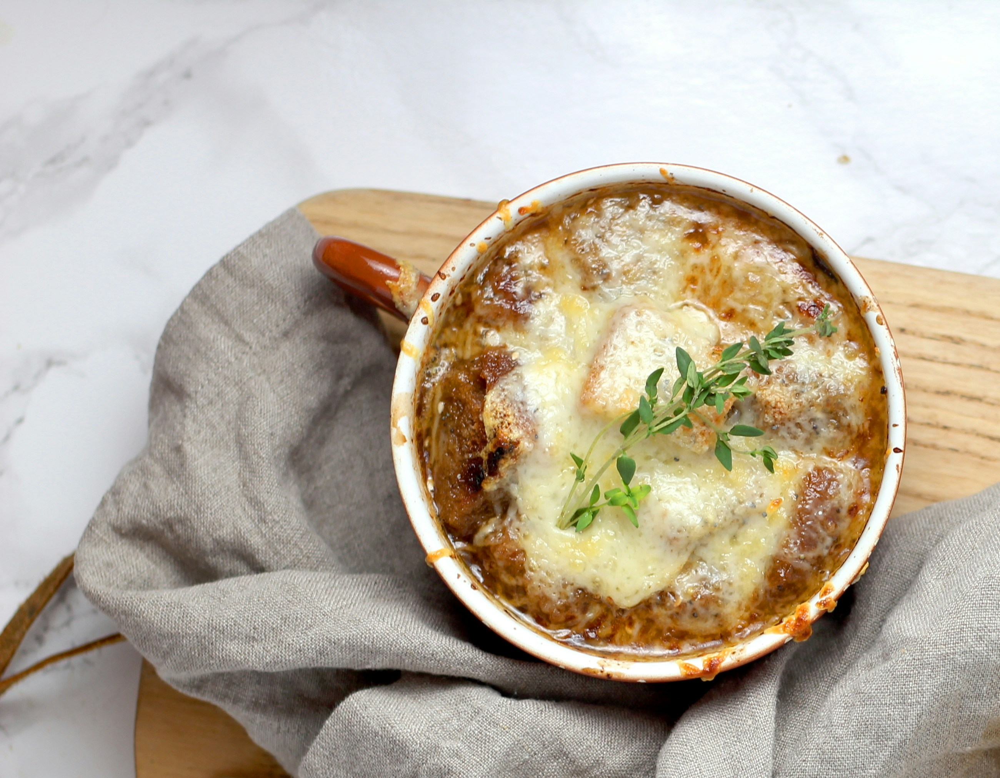

<<Back
French Onion Soup

Ingredients
- 2 large onions
- 3 tablespoons butter
- 2 tablespoons olive oil
- 2-4 cloves garlic
- 1/2 cup white wine
- 1 litre of beef stock
- 2 sprigs thyme
- 2 bay leaves
- 3 teaspoons worcestershire sauce
- grated gruyère cheese to cover
- sliced baguette
- salt and pepper to taste
Steps
- Halve and thinly slice the onions.
- Melt butter in a large pot over medium heat and add the onions once melted.
- Stir onions until softened and slightly translucent then lower the heat. Continue stirring regularly and caramalize for at least 45 minutes, preferably for 1 to 2 hours.
- Once the onions are a dark brown colour, season with salt and pepper. Pour in the wine and scrape the bottom of the pot to deglaze.
- Mince the garlic and add to the pot along with the stock, thyme, bay leaves and worcestershire sauce.
- Simmer for a further 20 mins over a low to medium heat.
- Optional: Portion the soup into oven-save bowls. Add a slice of lightly toasted baguette and cover with cheese. Grill until the cheese is melted and serve. Otherwise serve with baguette and cheese without grilling.